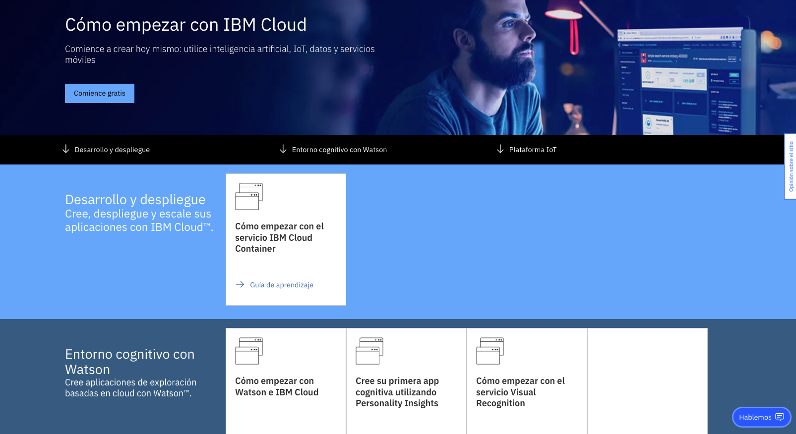
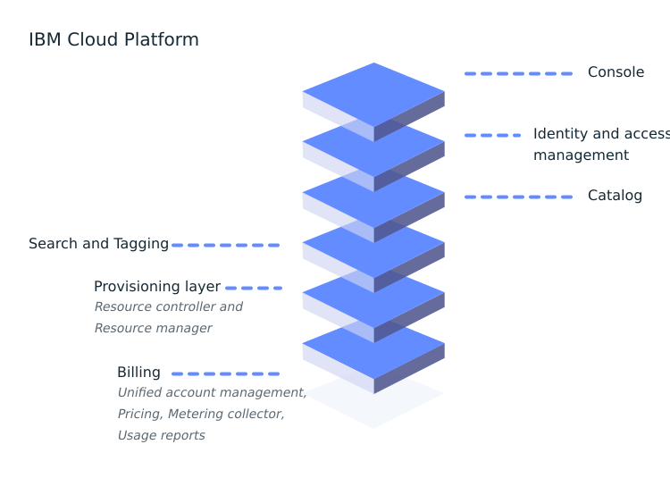
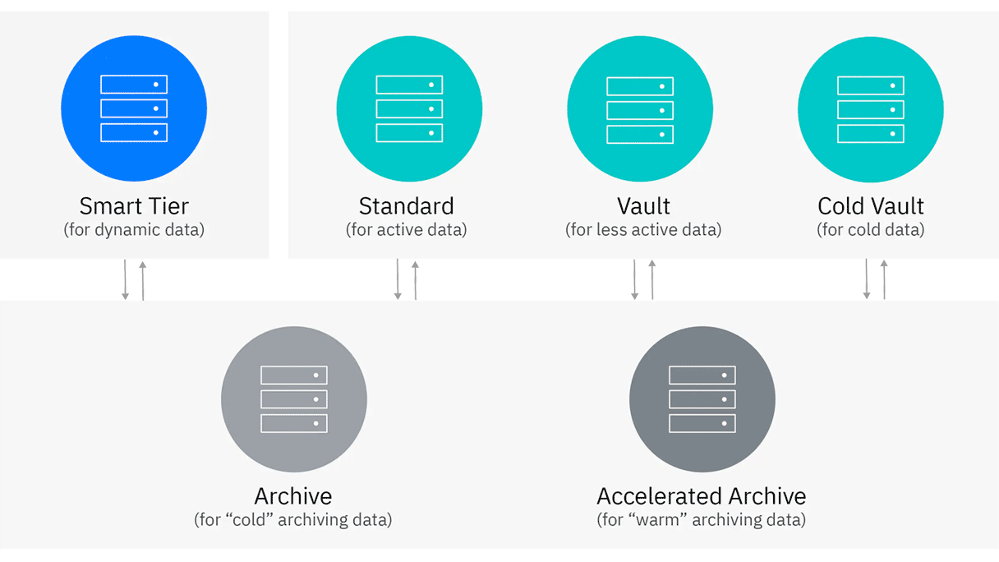
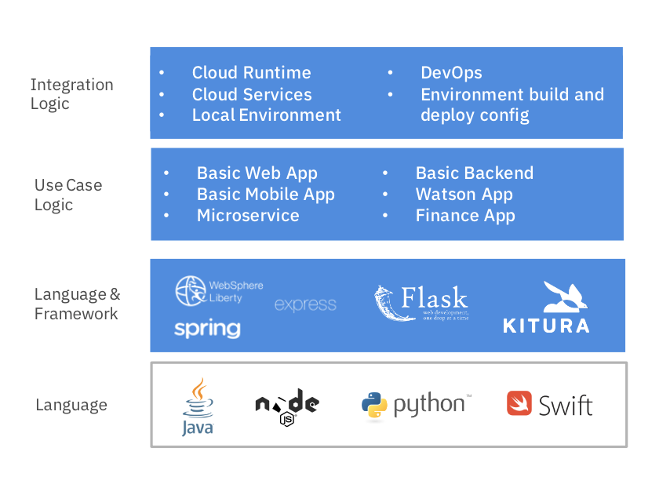

Overview de IBM Cloud¶
En esta sección podéis acceder a material de consulta sobre IBM Cloud, su catálogo, y un overview de los servicios más interesantes del cara al reto.

¿Qué es IBM Cloud?¶
La plataforma IBM Cloud combina plataforma como servicio (PaaS) con infraestructura como servicio (IaaS) para proporcionar una experiencia integrada. La plataforma escala y es compatible tanto con pequeños equipos y organizaciones de desarrollo como con grandes empresas.
Como ilustra el siguiente diagrama, la plataforma IBM Cloud se compone de varios componentes que funcionan juntos para proporcionar una experiencia en la nube coherente y fiable:
- Una consola robusta que sirve como interfaz para crear, ver y administrar tus recursos en la nube.
- Un componente de gestión de identidades y accesos (IAM) que autentica de forma segura a los usuarios para los servicios de la plataforma y controla el acceso a los recursos.
- Un catálogo que consta de cientos de productos compatibles.
- Un mecanismo de búsqueda y etiquetado para filtrar e identificar tus recursos.
- Un gestión de cuentas y facturación que proporciona un uso exacto para planes de precios y protección segura contra fraudes de targetas de crédito.

Catálogo IBM Cloud¶
Todos los productos que están disponibles en IBM Cloud se muestran de forma predeterminada en el catálogo. Puedes filtrar el catálogo por tipo para ver un tipo específico de producto. Ingresa palabras clave o estable filtros adicionales para ampliar el alcance de tu vista del catálogo.
Por ejemplo, si deseas implementar una instancia de análisis en Red Hat OpenShift en IBM Cloud, puedes seleccionar la categoría Análisis y filtrar los resultados seleccionando Red Hat OpenShift como destino de implementación.

Servicios de infraestructura y almacenamiento¶
La infraestructura como servicio (IaaS) es un tipo de computación en la nube qu permite asignar tus recursos de cómputo, de red, de almacenamiento y de seguridad a demanda. IBM Cloud ofrece diversos servicios de infraestructura como servicio e infraestructura en la nube.
IBM Cloud Virtual Server for VPC¶
En tu propio espacio privado en IBM Cloud, IBM Cloud VPC combina la seguridad de una nube privada con la escalabilidad de una nube pública. Virtual Private Cloud te permite aislar y aprovisionar segmentos de red en IBM Cloud donde implementar y administrar recursos.
Con Virtual Server for VPC puedes aprovisionar rápidamente instancios con alto rendimiento de red. Cuando aprovisiones una instancia, puedes seleccionar un perfil que coincida con la cantidad de memoria y potencia de cómputo que necesites para la aplicación que planees ejecutar en la instancia.
IBM Cloud Object Storage¶
IBM Cloud Object Storage es un servicio de almacenamiento en la nube altamente escalable, diseñado para alta resilencia y seguridad. Puedes administrar y acceder a tus datos a través de APIs RESTful. Además, puedes conectar aplicaciones diractamente a Cloud Object Storage para utilizar otros servicios de IBM Cloud con tus datos.
Cloud Object Storage ofrece cuatro opciones de clase de almacenamiento para adaptarse a diferentes tipos de cargas de trabajo:
- Smart Tier: coste automático optimizado para datos de cualquier actividad y acceso.
- Standard: datos activos a los que se accede con frequencia.
- Vault: datos menos activos a los que se accede una vez al mes.
- Cold Vault: datos 'fríos' a los que se accede varias veces al año.

Servicios de bases de datos¶
DBaaS (también conodico como servicio de base de datos administrado) es un servicio de computación en la nube que te permite acceder y usar un sistema de base de datos en la nube sin comprar y configurar tu propio hardware, instalar tu propio software de base de datos o administrar la base de datos por ti mismo.
IBM Cloud ofrece una amplia gama de bases de datos que están altamente disponibles y listas para producción.
IBM Cloudant¶
IBM Cloud te ofrece la opción de crear una instancia de Cloudant totalmente gestionada en IBM Cloud.
IBM Cloudant es una base de datos de documentos JSON totalmente gestionada que ofrece un escalado independiente sin servidor de la capacidad de rendimiento y el almacenamiento aprovisionados. Cloudant es compatible con Apache CouchDB y se puede acceder a través de una API HTTPS fácil de usar para aplicaciones web, móviles y de IoT.
IBM Db2¶
El servicio de IBM Db2 en IBM Cloud es un almacén de datos relacional de alto rendimiento totalmente administrado que ejecuta el motor de base de datos Db2 de grado empresarial.
Servicios para el desarrollador¶
Las aplicaciones cloud-native te brindan una mayor escalabilidad, una administración más simple y reducen los costes a través de automatización y prácticas de DevOps. IBM Cloud te ayuda a desarrollar estas aplicaciones en la nube asistiendo con herramientas y servicios que soportan entornos multicloud.
DevOps¶
DevOps describe un proceso de desarrollo de software y un cambio de cultura organizacional que acelera la entrega de software de mayor calidad al automatizar e integrar los esfuerzos de los equipos de desarrollo y operaciones de IT, dos equipos que tradicionalmente trabajaban por separado.
El ciclo de vida de DevOps es una serie de procesos de desarrollo automatizados e iterativos que facilitan la entrega rápida de productos de alta calidad. El nombre y la cantidad de flujos de trabajo pueden diferir según a quién se le pregunte, pero generalmente se reducen a seis:
-
Planificación: los equipos analizan nuevas características y funcionalidades en la próxima versión.
-
Desarrollo: este es el paso de programación, donde los desarrolladores prueban, desarrollan y crean funciones nuevas y mejoradas.
-
Integración (CI/CD): el nuevo código se integra automáticamente en la base de código existente, luego se prueba y empaqueta en un ejecutable para su integración.
-
Despliegue: el ejecutable resultante del paso de integración se implementa en un entorno productivo.
-
Operaciones: supervisar el rendimiento, el comportamiento y la disponibilidad de las funciones garantiza que éstas puedan proporcionar valor agregado al usuario final.
-
Learning: recopilación de comentarios de usuarios finales y clientes para volver a planificar mejoras y nuevas características en la próxima versión.

IBM Cloud Continuous Delivery proporciona un conjunto básico de herramientas para cualquier cadena de DevSecOps.
Starter Kits¶
Un starter kit es un patrón de aplicación que se puede integrar con servicios para generar un activo listo para producción. Los starter kits son excelentes para ensamblar dinámicamente un aplicación de producción basica que esté lista para la implementación en la nube.

IBM Cloud Functions¶
Basada en Apache OpenWhisk, IBM Cloud Functions es una plataforma de programación de funciones como servicio (FaaS) políglota para desarrollar código ligero que se ejecuta de forma escalable bajo demanda. Con IBM Cloud Functions, puedes utilizar tu lenguaje de programación favorito. Éste se ejecuta bajo demanda con solicitudes de API basadas en HTTP desde aplicaciones o en respuesta a servicios y eventos de terceros.
Recursos¶
A continuación ponemos a tu disposición una serie de recursos para aprender más sobre los servicios de IBM Cloud:
- Introducción a IBM Cloud.
- Recursos y tutoriales de IBM Cloud.
- IBM Cloud Continuous Delivery.
- Creando una app con un starter kit.
- Empezando con IBM Cloud Functions.
- Video de la sesión de enablement.